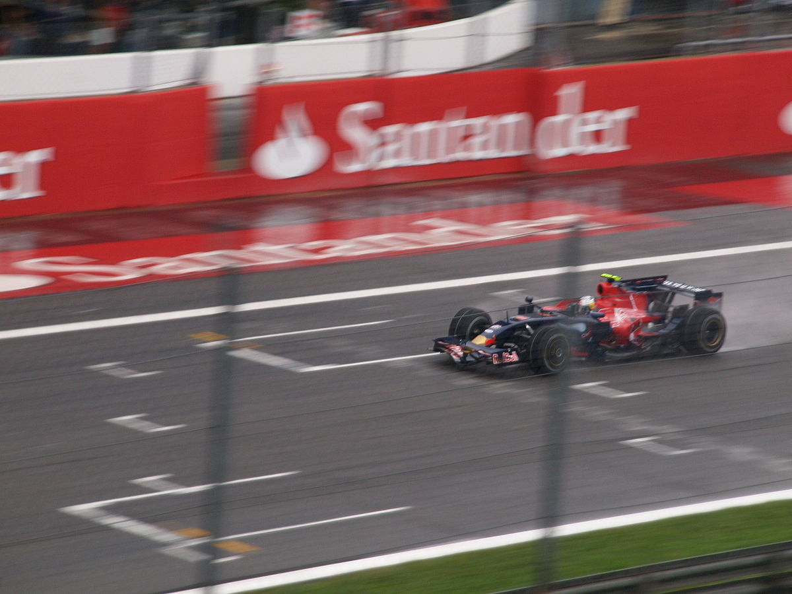

Sebastian Vettel debutta nel 2007 nel Gran Premio del Canada, dove sostituisce Robert Kubica e conquista il primo punto della sua carriera posizionandosi ottavo con la BMW Sauber.

La sua carriera inizia a decollare con il suo approdo in Toro Rosso, sempre nel 2007, dove sostituisce Scott Speed nel Gran Premio d'Ungheria.
Nelle gare successive si guadagna la conferma del posto nella scuderia per l'annata successiva, dove arriverà anche la prima vittoria nel Gran Premio d'Italia.
Riassumiamo qui le sue statistiche nel 2008: